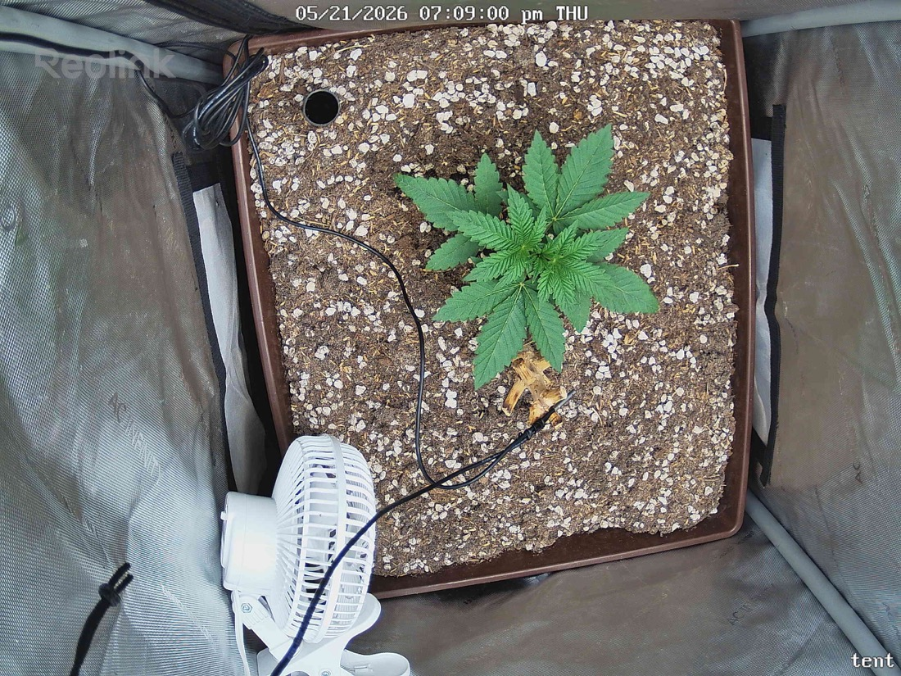

← All reports
May 21, 2026
Thu May 21, 2026 — 7:08 PM

Prognosis
Daily Check-In — Papaya Crush (Day ~23 from germ, ~16 in tent)
- Change between snapshots: Essentially identical — same posture, same leaf positions, same color. 4-minute gap, so this is a testing/calibration pair rather than a growth interval.
- Canopy: Multiple healthy serrated leaf sets, flat presentation, deep uniform green — consistent with the 380–400 PPFD push from 05-16 still being well tolerated.
- Structure: Compact, stocky, no stretch — internodes look tight. Several lateral nodes visibly developing under the main fan leaves.
- Stress signs: None visible. No tacoing, no clawing, no tip burn, no interveinal yellowing, no edge crisp. Soil surface looks appropriately dry on top (last water 05-19, day 2 of the 4–5 day cycle — on track).
- Old stump: The dried tan stalk to the right of the plant is the prior-grow crown, no-till — leaving it alone as noted in context.
- Phase check: ~3.5 weeks from germ, ~2.5 weeks in tent. You'd expect 4–6 true-leaf nodes and the start of lateral branching at this point — that's exactly what's showing. Right on schedule for early veg.
- Pests/disease: Nothing on leaf tops or soil surface I can resolve at this resolution. No webbing, no spots, no powder.
- Next actions: No action needed. Hold PPFD at 400, next water likely 05-23 or 05-24 depending on pot weight, keep logging.
Overall: Healthy, on-pace, zero stress — keep doing what you're doing.